library(tidyverse)
library(this.path)
library(nycflights13)
setwd(this.dir())
framingham <- read_csv("../../data/framingham.csv") |>
mutate(
male = factor(male, levels = c(0,1), labels = c("Female","Male")),
currentSmoker = factor(currentSmoker, levels = c(0,1), labels = c("Non-smoker","Smoker")),
prevalentHyp = factor(prevalentHyp, levels = c(0,1), labels = c("No","Yes")),
diabetes = factor(diabetes, levels = c(0,1), labels = c("No","Yes")),
TenYearCHD = factor(TenYearCHD, levels = c(0,1), labels = c("No","Yes")),
education = factor(education, levels = 1:4,
labels = c("Some HS","HS Diploma","Some College","College Degree"))
)Day 4 Lab: Data Visualization
SC INBRE Biostatistics Summer Intensive 2026
Exercise 1 — Distributions.
Using the Framingham data:
Make a histogram of BMI. Experiment with at least two
binwidthvalues and pick the one that reveals the most useful structure. Add a vertical line at BMI = 30 (obesity threshold) usinggeom_vline()and label it withannotate().Here are histograms with binwidths equal to 1/2, 1 and 2. Personally, I like the version with 1 the best.
ggplot(framingham, aes(x = BMI)) +
geom_histogram(binwidth = 1/2, fill = "steelblue", color = "white") +
labs(x = "Body Mass Index (BMI)", y = "Count",
title = "Distribution of BMI")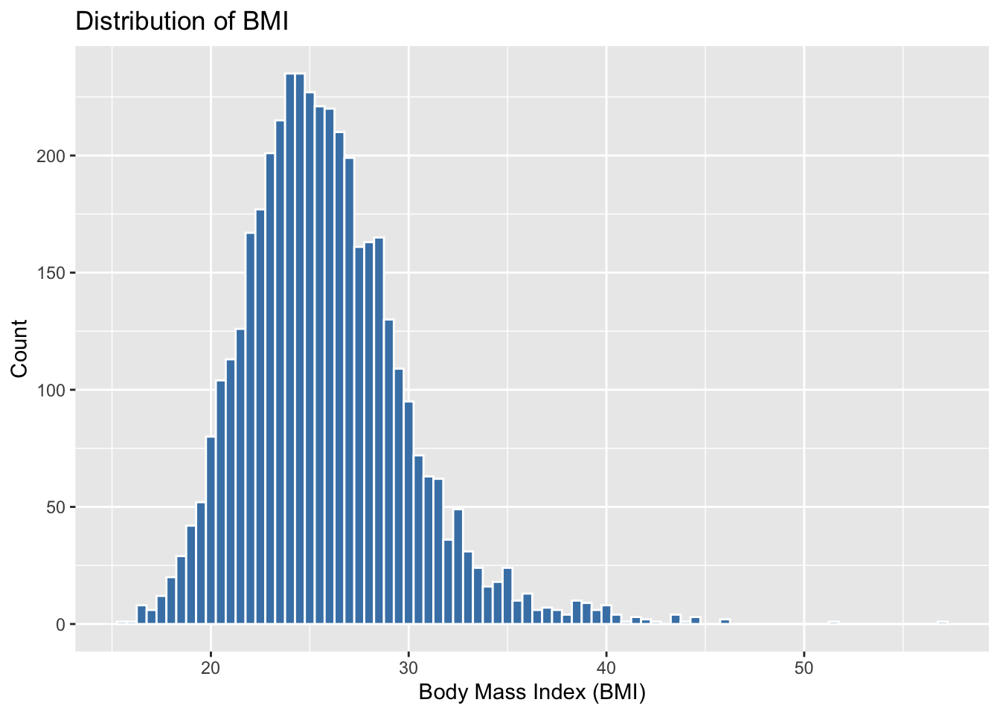
ggplot(framingham, aes(x = BMI)) +
geom_histogram(binwidth = 1, fill = "steelblue", color = "white") +
labs(x = "Body Mass Index (BMI)", y = "Count",
title = "Distribution of BMI")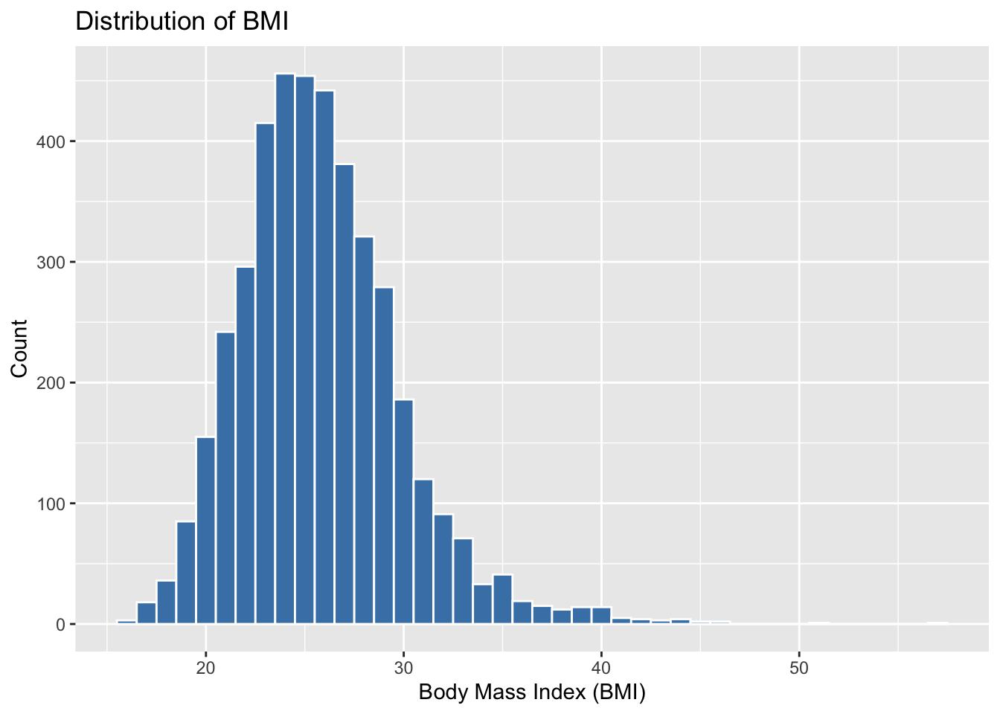
ggplot(framingham, aes(x = BMI)) +
geom_histogram(binwidth = 2, fill = "steelblue", color = "white")+
labs(x = "Body Mass Index (BMI)", y = "Count",
title = "Distribution of BMI")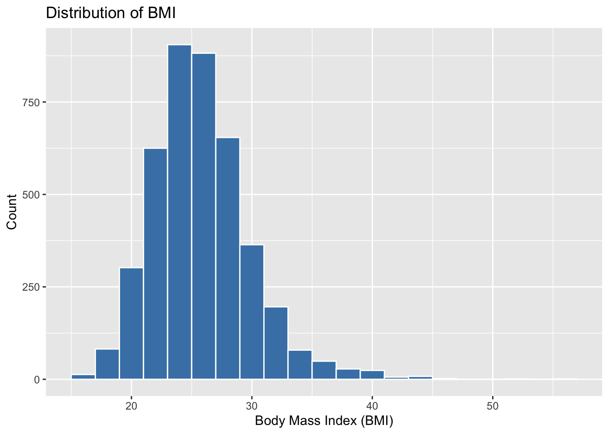
Next i’ll add the verticle line at 30:
ggplot(framingham, aes(x = BMI)) +
geom_histogram(fill = "steelblue", color = "white") +
geom_vline(xintercept = 30, color = "red",
linewidth = 1, linetype = "dashed") +
labs(x = "Body Mass Index (BMI)", y = "Count",
title = "Distribution of BMI")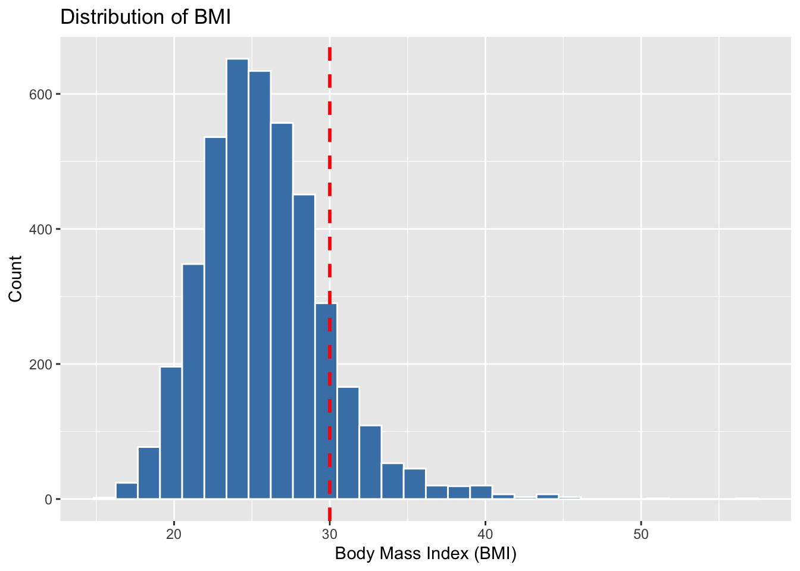
Finally, i’ll add the annotation labeling the line.
ggplot(framingham, aes(x = BMI)) +
geom_histogram(fill = "steelblue", color = "white") +
geom_vline(xintercept = 30, color = "red",
linewidth = 1, linetype = "dashed") +
annotate("text", x = 31, y = 600,
label = "Obesity threshold",
color = "red", hjust = 0, size = 4) +
labs(x = "Body Mass Index (BMI)", y = "Count",
title = "Distribution of BMI")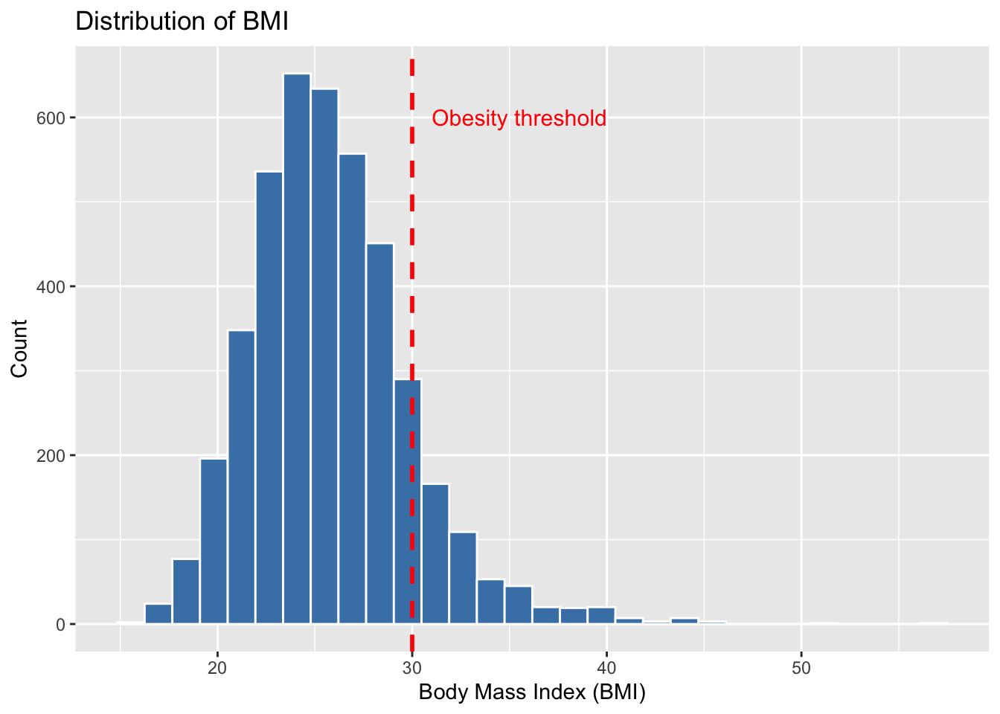
- Overlay density plots of BMI separately for diabetic and non-diabetic participants using
geom_density()withfillmapped todiabetesandalpha = 0.4. Usescale_fill_brewer(palette = "Set1"). What do you notice about the distributions?
ggplot(framingham, aes(x = BMI, fill = diabetes)) +
geom_density(alpha = 0.4) +
scale_fill_brewer(palette = "Set1") +
labs(x = "Body Mass Index (BMI)", y = "Count",
title = "Distribution of BMI")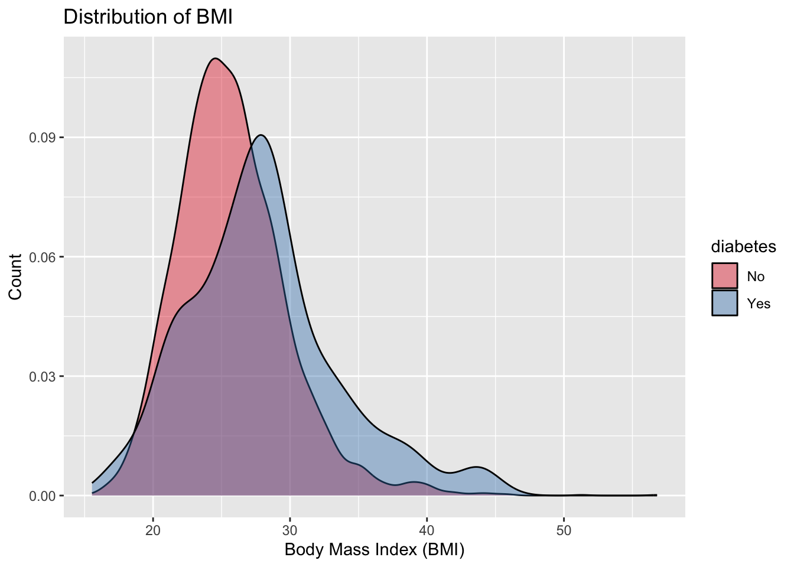
- Make a bar chart showing the count of participants at each education level. Tilt the x-axis labels so they don’t overlap (
angle = 20, hjust = 1insideelement_text()). Then make a second version showing the percentage at each level rather than the count (compute percentages first withdplyr, then usegeom_col()).
framingham |>
filter(!is.na(education)) |>
ggplot(aes(x = education)) +
geom_bar(fill = "steelblue") +
labs(x = "Education Level", y = "Percent (%)",
title = "Education Distribution") +
theme(axis.text.x = element_text(angle = 20, hjust = 1))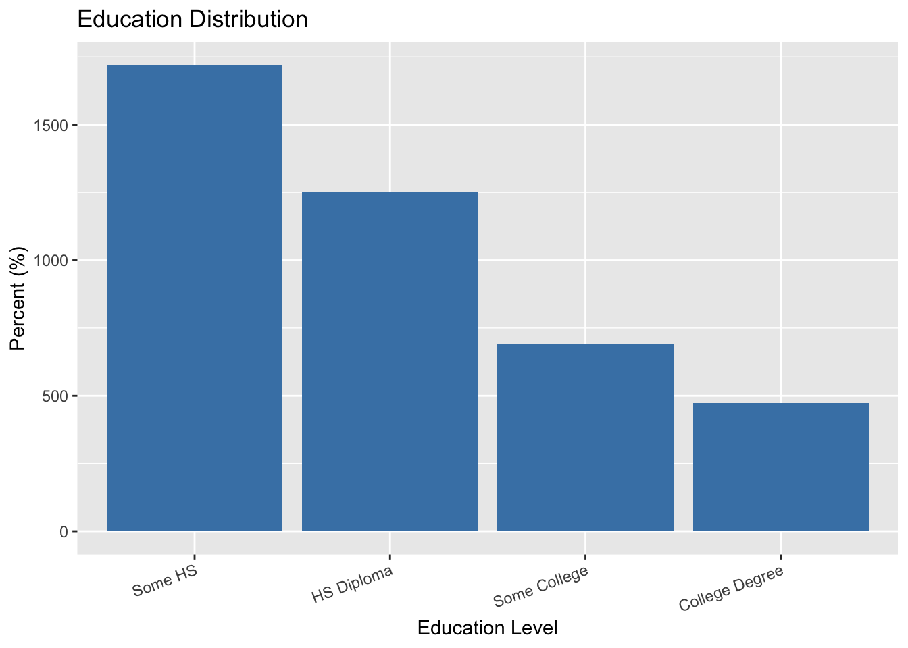
framingham |>
filter(!is.na(education)) |>
count(education) |>
mutate(pct = n / sum(n) * 100) |>
ggplot(aes(x = education, y = pct)) +
geom_col(fill = "steelblue") +
labs(x = "Education Level", y = "Percent (%)",
title = "Education Distribution (%)") +
theme(axis.text.x = element_text(angle = 20, hjust = 1))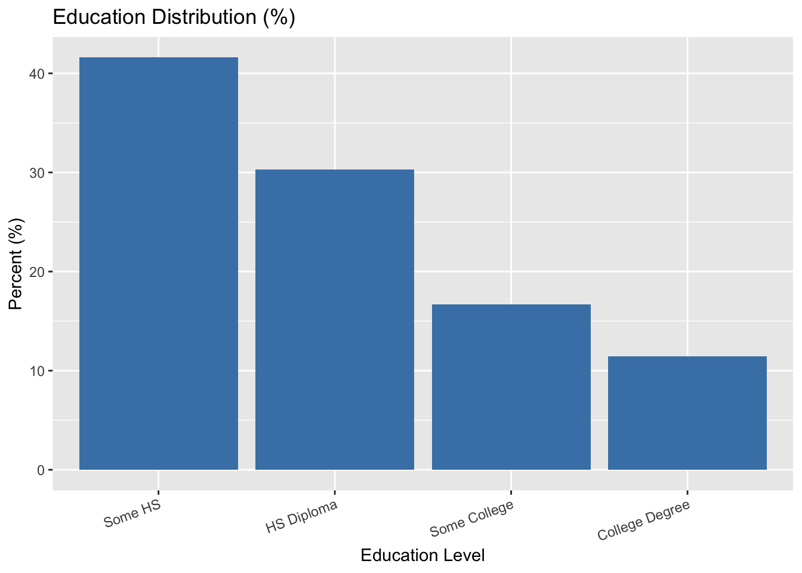
Exercise 3 — Scatterplots and Smoothers.
- Make a scatterplot of age vs. total cholesterol (
totChol). With over 4,000 points there will be overplotting — usealphato address it. Add a loess smoother (method = "loess") in red withse = TRUE. Describe the overall trend.
ggplot(framingham, aes(x = age, y = totChol)) +
geom_point(alpha = 0.2) +
# method = "loess" lines can show non-linear trends.
geom_smooth(method = "loess", color = "red", se = TRUE) +
labs(x = "Age (years)", y = "Total Cholesterol",
title = "Total Cholesterol vs. Age with Loess Smoother")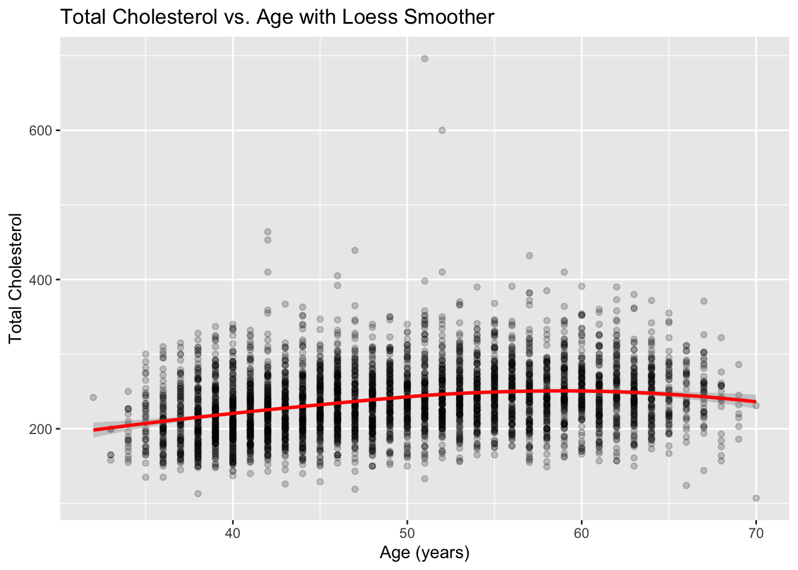
- Repeat but color points by
currentSmokerand add separate linear trend lines for each group (method = "lm",se = FALSE). Does the relationship between age and cholesterol differ between smokers and non-smokers?
ggplot(framingham, aes(x = age, y = totChol, color = currentSmoker)) +
geom_point(alpha = 0.2) +
# method = "loess" lines can show non-linear trends.
geom_smooth(method = "lm",se = FALSE) +
labs(x = "Age (years)", y = "Total Cholesterol",
title = "Total Cholesterol vs. Age with Loess Smoother")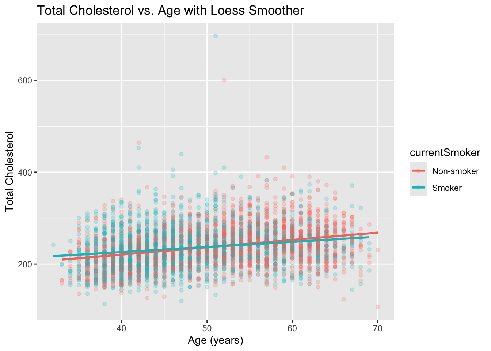
- Facet the plot from (b) by sex (
facet_wrap(~ male)). Add a complete set of labels and applytheme_minimal(). Are there any sex differences in the smoking–cholesterol relationship?
ggplot(framingham, aes(x = age, y = totChol, color = currentSmoker)) +
geom_point(alpha = 0.2) +
# method = "loess" lines can show non-linear trends.
geom_smooth(method = "lm",se = FALSE) +
facet_wrap(~male) +
labs(x = "Age (years)", y = "Total Cholesterol",
title = "Total Cholesterol vs. Age with Loess Smoother") +
theme_minimal()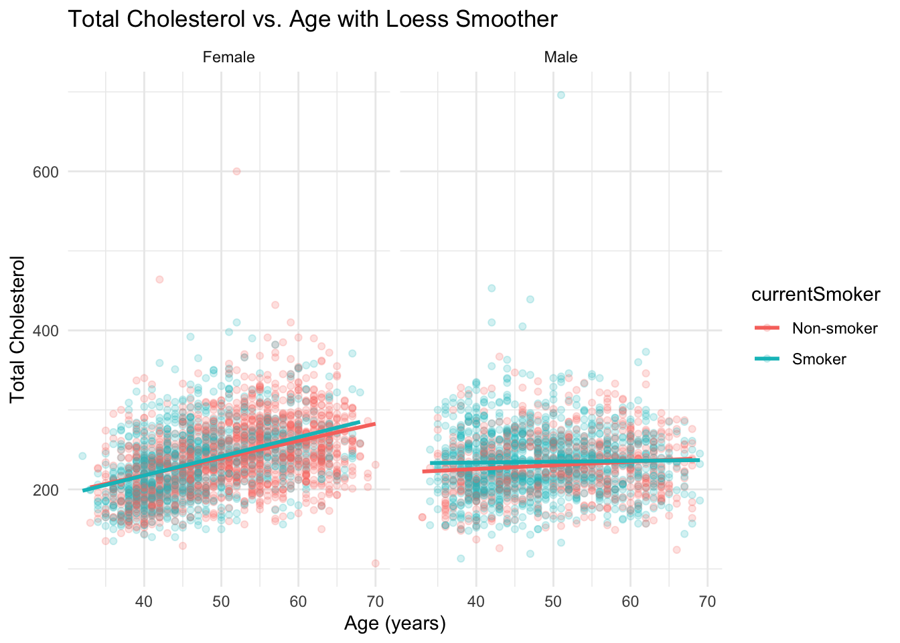
Exercise 5 — Joining Before Plotting.
This exercise combines Day 3 joins with Day 4 visualization using nycflights13.
- Join
flightswithweatheronoriginandtime_hourto add visibility (visib) and temperature (temp) to each flight. Call thisflights_wx.
library(nycflights13)
flights_wx <- flights |>
left_join(weather |> select(origin, time_hour, visib, temp),
)Compute the mean arrival delay by rounded visibility level (
mutate(visib = round(visib))), grouped by origin airport. Then plot mean delay (y) vs. visibility (x) with a separate colored line per origin airport usinggeom_line()andgeom_point(). Usescale_color_brewer(palette = "Dark2"). Is there a relationship between visibility and delays? Does it differ by airport?First, i’m going to get the data that we we’ll end up plotting.
mn_delay_vis_origin = flights_wx |>
# Creating rounded visibility variable.
mutate(visib = round(visib)) |>
# Grouping by origin and visibility
group_by(origin, visib) |>
# Getting the average delay
summarise(
mean_delay = mean(arr_delay, na.rm = TRUE),
.groups = "drop"
)
mn_delay_vis_origin# A tibble: 36 × 3
origin visib mean_delay
<chr> <dbl> <dbl>
1 EWR 0 37.4
2 EWR 1 45.4
3 EWR 2 30.4
4 EWR 3 20.2
5 EWR 4 14.8
6 EWR 5 21.4
7 EWR 6 19.9
8 EWR 7 17.7
9 EWR 8 13.4
10 EWR 9 17.7
# ℹ 26 more rowsNow, I’m going to plot this data:
# Give ggplot the data along with the x, y, and color variables.
ggplot(mn_delay_vis_origin, aes(x = visib, y = mean_delay, color = origin)) +
# Add lines and points
geom_line() + geom_point() +
# Fancy colors
scale_color_brewer(palette = "Dark2") +
# Nicer labels
labs(x = "Visibility", y = "Average Delay",
title = "Average Delay vs. Visibility by Airport") +
theme_minimal()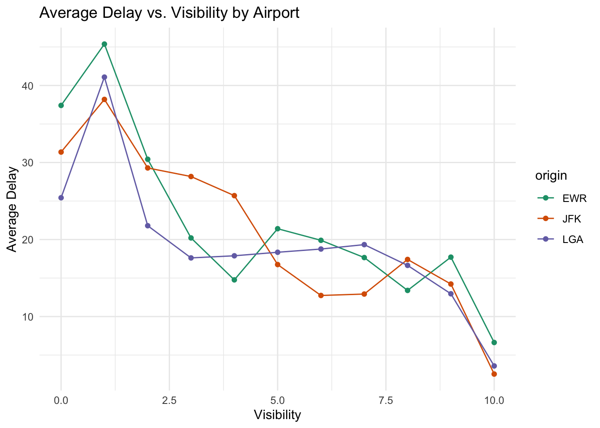
If you were so inclined, you could do the above all at once:
flights_wx |>
# Creating rounded visibility variable.
mutate(visib = round(visib)) |>
# Grouping by origin and visibility
group_by(origin, visib) |>
# Getting the average delay
summarise(
mean_delay = mean(arr_delay, na.rm = TRUE),
.groups = "drop"
) |>
# Give ggplot the data along with the x, y, and color variables.
ggplot(aes(x = visib, y = mean_delay, color = origin)) +
# Add lines and points
geom_line() + geom_point() +
# Fancy colors
scale_color_brewer(palette = "Dark2") +
# Nicer labels
labs(x = "Visibility", y = "Average Delay",
title = "Average Delay vs. Visibility by Airport") +
theme_minimal()- Make a boxplot of departure delay (
dep_delay) byoriginairport, limited to delays between –20 and 120 minutes (usefilter()first, orcoord_cartesian()). Order the boxes by median delay, applytheme_classic(), and add proper labels.
flights_wx |>
# filter to delays between 20 and 120
filter(arr_delay >= -20 & arr_delay <= 120) |>
# Giving ggplot the x variable (reorder by increaseing median arrival delay) and y variable
ggplot(aes(x = reorder(origin, arr_delay, FUN = median), y = arr_delay)) +
# Adding the boxplot
geom_boxplot() +
# Classic Theme
theme_classic() +
# Adding labels
labs(x = "Origin Airport", y = "Arrival Delay",
title = "Boxplot of Arrival Delay by Origin Airport")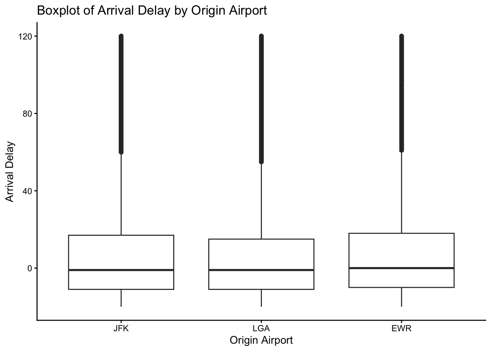
Exercise 6 (Challenge) — A Complete Figure.
Build a single polished figure that answers this question: How does the 10-year coronary heart disease rate in the Framingham cohort vary by age group, sex, and hypertension status?
Steps:
- Create an age group variable using
case_when(): “40–44”, “45–49”, “50–54”, “55–59”, “60–64”, “65+” (or similar grouping of your choosing). Make it a factor with levels in the right order.
framingham <- framingham |>
mutate(
age_group = factor(case_when(
age < 45 ~ "40-44",
age < 50 ~ "45-49",
age < 55 ~ "50-54",
age < 60 ~ "55-59",
age < 65 ~ "60-64",
age >= 65 ~ "65+"
))
)
# Check the ordering of the factor
framingham$age_group[1:5][1] 40-44 45-49 45-49 60-64 45-49
Levels: 40-44 45-49 50-54 55-59 60-64 65+- Compute the CHD rate (proportion with
TenYearCHD == "Yes") for each combination of age group, sex, and hypertension status usinggroup_by()andsummarize(). Keep only groups with at least 20 participants.
avg_CHD_data <- framingham |>
group_by(age_group, male, prevalentHyp) |>
summarise(
N = n(),
avg_CHD = mean(TenYearCHD == "Yes")
) |>
filter(N >=20)- Plot the result. A grouped bar chart (
geom_col()withposition = "dodge") or a line plot (geom_line()+geom_point()) with age group on the x-axis works well here. Color by hypertension status, facet by sex.
ggplot(avg_CHD_data, aes(x = age_group, y = avg_CHD, fill = prevalentHyp)) +
geom_col(position = "dodge") +
facet_wrap(~male)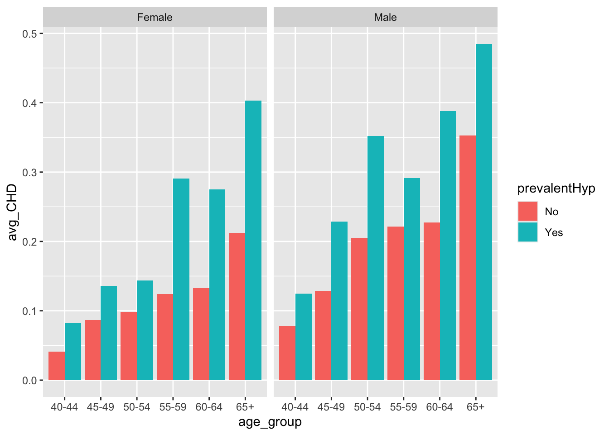
- Add a full set of labels, a meaningful color palette, and a clean theme.
ggplot(avg_CHD_data, aes(x = age_group, y = avg_CHD, fill = prevalentHyp)) +
geom_col(position = "dodge") +
facet_wrap(~male) +
theme_minimal() +
scale_fill_brewer(palette = "Set1") +
theme(
legend.position = "bottom",
panel.grid.minor = element_blank(),
strip.text = element_text(face = "bold")
) +
labs(
title = "Average 10 Year CHD Rates by Age",
subtitle = "Framingham Heart Study cohort",
caption = "Source: Framingham Heart Study",
x = "Age Group (years)",
y = "10 CHD Rates",
fill = "Hypertension Status"
)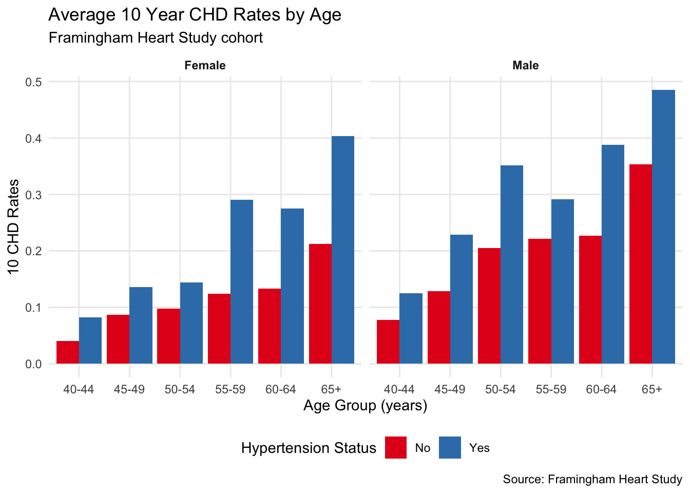
- Save the figure with
ggsave()at 300 dpi.
ggsave("figures/chd_vs_age.png", width = 7, height = 5, dpi = 300)
ggsave("figures/chd_vs_age.pdf", width = 7, height = 5)- Write a 3–4 sentence caption summarizing the main findings as if this were going into a manuscript.
First, the CHD rates increase by age group for males and females. Overall, the CHD rates for males are higher than they are for females. Lastly, it appears that the different in CHD rates between those with and without hypertension, is different for males and females. For females, having hypertension is a bigger risk factor for CHD than for males (especially for the older age groups).